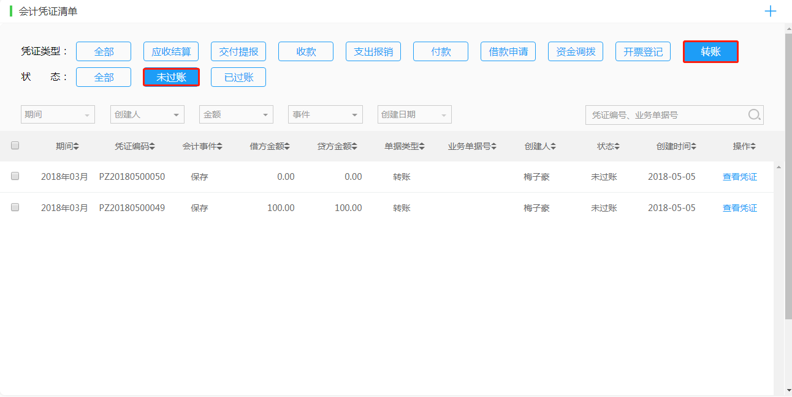

自动会计
自动生成
系统按照单据类型和事件自动生成会计凭证汇总清单，财务人员通过本表可以方便快捷地筛选、查询会计凭证。
- 点击“查看凭证”按钮可以查看凭证详细，明确该凭证对应的单据、科目、金额。
- 点击“导出”按钮，可以将当页凭证导出到本地，实时查看凭证。
手动增加
1、当涉及到与资金收付、收支利润、往来账款无关的凭证（如利润结转、利润分配或者生产制造企业的领料和完工入库），需点击右上角的“+”按钮，手动新增转账凭证。
2、输入摘要、相应科目编码、借贷方金额，点击保存完成（保存时借贷方可以不平，但过账时凭证必须借贷相等）。
3、在自动会计凭证列表中类型选择"转账“，状态选择“未过账”，点击过账按钮，凭证金额就会反应到总账余额中去。

4、当转账凭证录入错误或需要取消过账时，可以在列表中选择“已过账”状态，点击反过账按钮取消过账。